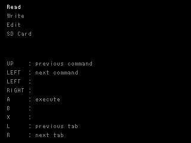
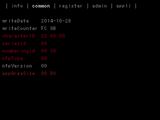
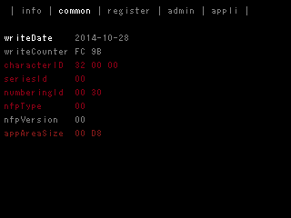
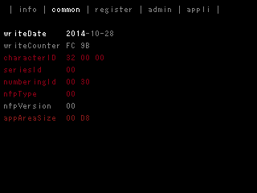

NfpSdmcTool is a tool that uses the NFP library and supports debugging of applications.
If NFP tags used for debugging are exported to an SD card using NfpSdmcTool, the same data can be imported from the SD card and rewritten to NFP tags.
In addition, a feature to edit tag data is also provided, so tags for debugging can be generated on this tool.
Note: Prepare the NFP tags in advance, using the NoftWriter tool to write to the tags the amiibo data you plan to use in your application.
To use this application, follow the instructions displayed at the bottom of the lower screen.
The following menu is displayed on the lower screen when NfpSdmcTool starts.

Select a menu using Up and Down on the +Control Pad, and then execute that menu by pressing the A Button.
Select Read from the Menu Screen while the NFP tag is placed in the center of the lower screen LCD for a new Nintendo 3DS and in the NFC reader/writer for a Nintendo 3DS.
When the process is successful, information read from the NFP tag is displayed on the upper screen.

The information displayed on the top screen can be switched using the L Button and R Button.
Select Write from the Menu Screen while the NFP tag is placed in the center of the lower screen LCD for a New Nintendo 3DS and in the NFC reader/writer for a Nintendo 3DS.
When the process is successful, the data displayed on the upper screen is written to an NFP tag.
To run, select Edit from the Menu Screen after reading data from NFP tags with the Read command or after importing tag data from an SD card.
As shown below, the leading parameter on the upper screen (WriteDate in this example) is selected, and other parameters can be selected by pressing Up and Down on the +Control Pad, or by pressing the L Button and R Button.

When the A Button is pressed after selecting a parameter, that parameter can be edited.
Note: Parameters in red cannot be edited because they are written on ROM that cannot be rewritten.

In this figure, the year of the writeData (2104) is selected, and the value can be changed with Up and Down on the +Control Pad.
In the same way, the month or day is selected by pressing Left and Right on the +Control Pad, and the value can be changed by pressing Up and Down on the +Control Pad.
When the values are set, end the parameter editing by pressing the B Button.
After inserting a SD card, select the SD card from the Menu Screen and execute.
Note: Do not insert or remove SD cards while NfpSdmcTool is running.
As shown below, a list of files stored on the SD card is shown.
Files can be selected by pressing Up and Down on the +Control Pad.
Directories have "/" at the end of the filename, and a directory hierarchy can be traced by pressing Left and Right on the +Control Pad.
To import data saved on a SD card, select the target file and press the A Button.
To export data read from a NFP tag with Read or data edited with Edit to an SD card, either save by selecting a filename by pressing the R Button, or overwrite by selecting the file and pressing the X Button.
After exporting to or importing from the SD card completes, press the B Button to return to the Menu Screen.
There is no problem if the tags exported to the SD card and the tags to which data imported from the SD card is written are different.
However, this tool cannot modify UID or CharacterID because they are written to ROM that cannot be rewritten.
In other words, to reproduce data the same as tags from the export source that contains data that cannot be rewritten, such as CharacterID or NumberingID, the same amiibo data must be written in advance using the NoftWriter tool.
CONFIDENTIAL